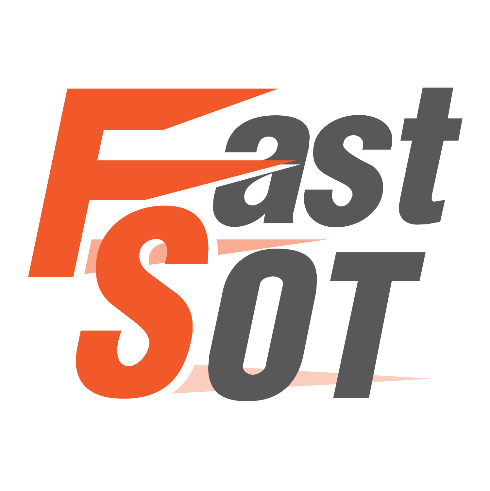

Chaophrayayommarat Hospital | Audio Visual Departmen
จองคิวห้องประชุม ติดตั้งระบบเครื่องเสียง ระบบภาพ หรือระบบประชุมทางไกลออนไลน์
ติดต่อสอบถามเพิ่มเติมผ่านLINE
ออกแบบสื่อประชาสัมพันธ์ ตัดสติกเกอร์ ทำป้าย แบนเนอร์ลงเว็บไซต์ โปสเตอร์งานวิชาการ หรือสื่อสิ่งพิมพ์ต่างๆ
ยื่นคำขอถ่ายรูป ทำบัตรประจำตัวบุคลากรใหม่ หรือขอออกบัตรใหม่กรณีชำรุด/สูญหาย
บันทึกภาพนิ่งกิจกรรมโรงพยาบาล ถ่ายภาพทางการแพทย์ งานพิธีการ งานประชุมสัมมนา งานวิชาการ
ถ่ายทำและตัดต่อวิดีโอกิจกรรม ผลิตสื่อการสอนทางการแพทย์ และงานวิดีโอพรีเซนเตชันหน่วยงาน